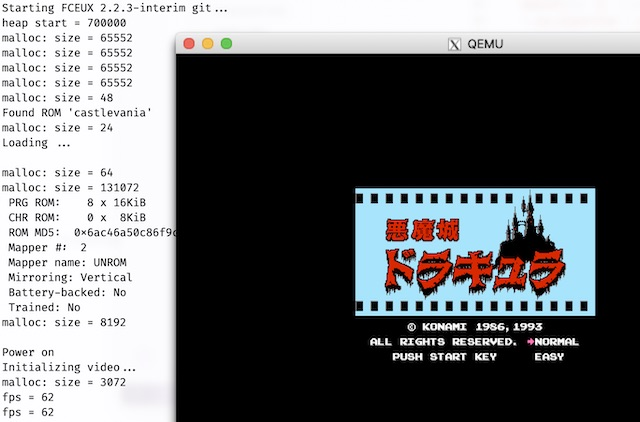

<html>
  <Head>
<meta http-equiv="Content-Type" content="text/html; charset=utf-8">

    
<link rel="stylesheet" href="../static/css/bootstrap.min.css"/>
<link rel="stylesheet" href="../static/css/bootstrap-theme.min.css"/>


    <link rel="stylesheet" href="../static/css/fonts/crmison.css"/>
    <link rel="stylesheet" href="../static/css/fonts/fira_code.css"/>
    <link rel="stylesheet" href="../static/css/fonts/ptsans.css"/>
    <link rel="stylesheet" href="../static/css/katex.min.css"/>
    <link rel="stylesheet" href="../static/css/wiki.css"/>
    <link rel="stylesheet" href="../static/css/codehilite.css"/>

    <script src="../static/js/jquery.min.js"></script>
    <script src="../static/js/bootstrap.bundle.min.js"></script>
    <script src="../static/js/katex.min.js"></script>
    
    

    <title>L0: 直接运行在硬件上的小游戏 (amgame)</title>
  </Head>
  <body>
   
   
<nav class="navbar fixed-top navbar-expand-lg navbar-dark bg-dark">
  <a class="navbar-barnd" href="index.html">Yanyan's Wiki</a>
  <div class="collapse navbar-collapse">
    <div class="navbar-nav">
      <a class="nav-item nav-link active" href="OS2020.html">
        
        操作系统 (2020)</a>
      <a class="nav-item nav-link active" href="SysLab2020.html">
        计算机系统综合实验 (2020)</a>
      <a class="nav-item nav-link active" href="ICS_NJU.html"> 加入我们</a>
    </div>
    <form class="form-inline" autocomplete="off">
      <input id="token-input" type="text" oninput="login();" maxlength="16"
        data-toggle="tooltip" data-placement="bottom"
        title="用于确定身份的作业提交 SHA-1 hash digest。更改后回车或刷新网页生效"></input>
    </form>
  </div>
</nav>

<center>
  <div class="article-container">
    <div class="article">
      <h1 id="l0-amgame">L0: 直接运行在硬件上的小游戏 (amgame)</h1>
<div markdown="1"><div class="fenced fenced-red"><div>
<h4 id="_1">截止日期</h4>
<p>关于实验环境设置、提交方法、评分规则等，请阅读<a href="OS2020_Labs.html">实验须知</a>。获取代码，在 <code>os-workbench</code> 中执行：</p>
<div class="codehilite"><pre><span></span><span class="err">git pull origin L0</span>
</pre></div>


<p>Soft Deadline: 2020 年 3 月 22 日 23:59:59。</p>
<p>需要提交以学号命名的 .pdf 格式实验报告 (保存在 <code>amgame/</code> 目录下)。除非特殊情况，实验报告<strong>不建议超过 2 页 A4 纸</strong>。请在实验报告中描述你在实验中遇到的特别值得一提的事件，例如你代码的架构设计、特别精巧的实现、遇到印象深刻的 bug 等。</p>
</div></div></div>

<div plugin="submission(course='OS2020', module='L0')"><div class="accordion submission" id="accordionExample">

  <div class="card">
    <div class="card-header submit-card">
      <form action="../upload.html" method="post" enctype="multipart/form-data">
        <div class="form-row align-items-center">
            <label class="col-form-label">OS2020-L0</label> 提交结果
        </div>
      </form>
    </div>
  </div>


</div></div>

<div markdown="1"><div class="fenced fenced-green"><div>
<h4 id="_1">热身问题：“写操作系统”，从哪里开始？</h4>
<p>一个普遍 (但片面) 的认识是写操作系统就是写汇编、跟底层硬件打交道。也恰恰是因为计算机硬件对大众的 “神秘性”，写操作系统一直以来都是非常神秘的，网上也有不少教程：30 天自制操作系统、Orange's OS, XXX (JamesM, Bran, ...)'s Kernel Development Tutorial……这些材料通常会从硬件的底层开始介绍 (通常是 x86)：什么是 GDT, IDT, TSS、系统启动的过程……这些复杂而又琐碎的细节给了我们上述的感觉。</p>
<p>在这一门课，我们暂时不谈论上面所有的细节，而从 “操作系统是一个 C 程序” 开始，假设硬件和软件之间存在某种约定，硬件提供了足够的<span class="red">机制</span> (mechanisms) 设置好一个没有标准库 C 程序的运行环境，其中有栈区、静态数据、堆区；代码从 <code>main</code> 函数开始执行。硬件提供的机制还允许我们在 C 代码运行的过程中直接、独占式地访问系统中的物理设备，例如显示器、计时器等。</p>
<p>所以，就让我们从对没有操作系统的 “裸机” (bare-metal) 编写 C 程序开始操作系统之旅吧！</p>
</div></div></div>

<h2 id="1">1. 背景</h2>
<p>《操作系统》课程的第一个实验只是在裸机上写一个小程序——小游戏。为什么要写游戏？以 NES 模拟器 LiteNES 为例，简化的模拟器 (游戏) 的 “主循环” (<code>fce.c</code>) 代码如下：</p>
<div class="codehilite"><pre><span></span><span class="k">while</span> <span class="p">(</span><span class="mi">1</span><span class="p">)</span> <span class="p">{</span>
  <span class="c1">// 在每一个时间片，例如每 16.7ms (60 fps)</span>
  <span class="n">wait_for_frame</span><span class="p">();</span>

  <span class="c1">// 做完这一个时间片内需要完成的工作</span>
  <span class="kt">int</span> <span class="n">scanlines</span> <span class="o">=</span> <span class="mi">262</span><span class="p">;</span>
  <span class="k">while</span> <span class="p">(</span><span class="n">scanlines</span><span class="o">--</span> <span class="o">&gt;</span> <span class="mi">0</span><span class="p">)</span> <span class="p">{</span>
    <span class="n">ppu_cycle</span><span class="p">();</span>      <span class="c1">// 更新游戏图像</span>
    <span class="n">psg_detect_key</span><span class="p">();</span> <span class="c1">// 读取按键，更新游戏逻辑</span>
  <span class="p">}</span>
<span class="p">}</span>
</pre></div>


<p>小游戏的逻辑非常类似于早期的批处理操作系统。所谓 “批处理”，就是运行完一个程序后再接着运行另一个。类似于游戏，批处理系统也是一个大循环：</p>
<div class="codehilite"><pre><span></span><span class="k">while</span> <span class="p">(</span><span class="mi">1</span><span class="p">)</span> <span class="p">{</span>
  <span class="n">Job</span> <span class="o">*</span><span class="n">job</span> <span class="o">=</span> <span class="n">get_job</span><span class="p">();</span> <span class="c1">// 实际的批处理系统可以解析、执行脚本</span>
  <span class="k">if</span> <span class="p">(</span><span class="n">job</span><span class="p">)</span> <span class="p">{</span>
    <span class="n">load</span><span class="p">(</span><span class="n">job</span><span class="p">);</span>
  <span class="p">}</span>
<span class="p">}</span>
</pre></div>


<p>不妨假设 “批处理” 系统是这样工作的：</p>
<ol>
<li>批处理系统执行的命令由键盘输入，因此 <code>get_job()</code> 就是从键盘读取按键并解析成命令，和游戏读取按键类似。</li>
<li>执行的命令 (job) 是保存在磁盘上的 ELF 格式的二进制文件，使用硬件提供的 I/O 指令，从存储设备中将二进制文件加载到内存中。(实验代码中有一份 x86/x86_64 通用的二进制文件加载代码，位于 <code>abstract-machine/am/src/x86/qemu/boot/main.c</code>）；简化的代码如下：</li>
</ol>
<div class="codehilite"><pre><span></span><span class="n">copy_from_disk</span><span class="p">(</span><span class="n">elf32</span><span class="p">,</span> <span class="mi">4096</span><span class="p">,</span> <span class="mi">0</span><span class="p">);</span> <span class="c1">// 从磁盘读取 ELF 文件头</span>
<span class="k">if</span> <span class="p">(</span><span class="n">elf</span><span class="o">-&gt;</span><span class="n">e_machine</span> <span class="o">==</span> <span class="n">EM_386</span><span class="p">)</span> <span class="p">{</span>  <span class="c1">// x86 (32-bit)</span>
  <span class="n">load_elf32</span><span class="p">(</span><span class="n">elf32</span><span class="p">);</span> <span class="c1">// 从磁盘加载二进制文件到 ELF 文件描述的位置</span>
  <span class="p">((</span><span class="kt">void</span><span class="p">(</span><span class="o">*</span><span class="p">)())(</span><span class="kt">uint32_t</span><span class="p">)</span><span class="n">elf32</span><span class="o">-&gt;</span><span class="n">e_entry</span><span class="p">)();</span> <span class="c1">// 跳转到加载的代码执行</span>
<span class="p">}</span>
</pre></div>


<p>跳转后，控制权就交给了 job；job 结束后函数返回，重新回到批处理系统。</p>
<p>一种典型的批处理系统是把全班同学的游戏做成一个 “合集”，系统本身是 “游戏菜单”，能够加载其他游戏。这样的 “操作系统” 在 NES 中十分常见，体现为带菜单的游戏合集：</p>
<p></img></p>
<p>操作系统之旅起步于在 “裸机” 上编程。下个实验将正式开启多处理器，开始现代操作系统的旅程。</p>
<h2 id="2">2. 实验描述</h2>
<div markdown="1"><div class="fenced fenced-red"><div>
<h4 id="1-abstractmachine-klib">实验要求 1 (非强制完成)：实现 AbstractMachine 中 klib 中缺失的函数</h4>
<p>klib 包含一些必要的函数，例如 <code>assert</code>, <code>printf</code>, <code>memcpy</code> 等。我们不强制你实现所有 klib 函数，但随着操作系统实验的进展，不实现库函数将会使你寸步难行。</p>
<p>如果你在《计算机系统基础》中已经完成了实现，你可以直接复制你的实现 (但要小心，假设里面可能存在 bugs，例如多处理器的线程安全性)。这部分代码非常重要——会一直使用到这学期的最后，因此也请你非常小心地编写代码；klib 中的 bug 会使原本就已很困难的操作系统内核调试更加令人沮丧。</p>
</div></div></div>

<p>请首先阅读 <a href="AM.html">AbstractMachine 文档</a>，正确配置好 <code>AM_HOME</code> 环境变量为 <code>os-workbench/</code> 中的 <code>abstract-machine</code> 目录。注意如果你在《计算机系统基础》课程中已经配置过，你需要<strong>重新配置</strong>，确保在终端中 <code>echo $AM_HOME</code> 显示的目录是 <code>os-workbench</code> 中 <code>abstract-machine</code> 的绝对路径。</p>
<p><code>os-workbench/abstract-machine</code> 目录中已经有若干测试程序和应用程序，和实现了部分的 klib，目录树如下 (<code>tree</code> 命令查看)：</p>
<div class="codehilite"><pre><span></span>.
├── Makefile       =&gt; 编译脚本
│   ...
├── am/
│   ├── am.h       =&gt; AM 头文件
│       ...
├── apps           =&gt; 若干应用程序
│   ├── coremark   =&gt; benchmark 程序
│   ├── dhrystone  =&gt; benchmark 程序
│   ├── fceux      =&gt; NES 模拟器
│   ├── litenes    =&gt; NES 模拟器
│   └── microbench =&gt; benchmark 程序
├── libs
│   └── klib       =&gt; 已有的 klib 实现 (C++ 支持等)
├── share
│   └── games
└── tests
    ├── amtest     =&gt; AM 各 extensions 基本功能测试
    └── klibtest   =&gt; klib 测试
</pre></div>


<p>在应用程序或测试程序的目录中，执行 <code>make ARCH=native && make run ARCH=native</code> (应用程序作为 Linux 本地进程运行)，应当能看到正确的运行结果；但 <code>make ARCH=x86_64-qemu</code> 将会成功编译，但遇到链接错：</p>
<div class="codehilite"><pre><span></span>$ make ARCH=x86_64-qemu 
# Building fceux [x86_64-qemu] with AM_HOME {.../abstract-machine}
...
# Building bootblock [x86_64-qemu]
+ LD -&gt; build/fceux-x86_64-qemu.o
.../abstract-machine/apps/fceux/build/x86_64-qemu//./src/boards/n106.o: In function `Mapper19_ESI()':
.../abstract-machine/apps/fceux/src/boards/n106.cpp:322: undefined reference to `memset'
.../abstract-machine/apps/fceux/src/boards/n106.cpp:323: undefined reference to `memset'
.../abstract-machine/apps/fceux/build/x86_64-qemu//./src/boards/n106.o: In function `DoNamcoSound(int*, int) [clone .isra.0]':
.../abstract-machine/apps/fceux/src/boards/n106.cpp:302: undefined reference to `printf'
</pre></div>


<p>阅读出错信息，“undefined reference to <code>memset</code> and <code>printf</code>”。通过 RTFM/STFW/经验，我们知道 “undefined reference” 是因为链接符号解析失败导致的——我们的整个代码中没有 <code>memset</code> 和 <code>printf</code> 这两个符号——这两个函数并没有被实现！这就是你在本实验中的任务。</p>
<p>(此处省略一万字调试过程……)</p>
<p>如果实现顺利，你将能运行所有 AbstractMachine 中的测试程序，并且获得和 native 相同的运行效果。将相应的 rom 复制到 <code>/share</code> 目录中 (例如 <code>castlevania.nes</code>)，后，在 fceux 目录中 <code>make run ARCH=x86_64-qemu mainargs=castlevania</code> 运行 NES “恶魔城” (恶魔级难度，通关难度堪比《计算机系统基础》PA) 游戏，并能在终端上看到正确的输出信息 (<code>make run</code> 的 qemu 使用了 <code>-serial stdio</code> 选项；串口 COM1 输出到 stdout)：</p>
<p></img></p>
<p>(大家运行一下附带的 Super Mario 就好，以免 repo 大小膨胀，造成提交困难)</p>
<div markdown="1"><div class="fenced fenced-red"><div>
<h4 id="2">实验要求 2 (必做)：实现可移植的、直接运行在计算机硬件上的小游戏</h4>
<p>编写一个直接运行在 AbstractMachine 上 (仅仅启用 IOE 扩展，不使用其他硬件机制如中断/异常/虚拟存储/多处理器) 的小游戏；满足：</p>
<ol>
<li>有肉眼可辨认的图形输出；</li>
<li>能使用键盘与游戏交互；</li>
<li>游戏使用的内存 (代码、静态数据总和不超过 1 MiB、堆区 <code>_heap</code> 使用不超过 1 MiB)，因此你不必考虑复杂的图形；</li>
<li>按 ESC 键后调用 <code>_halt()</code> 退出；除此之外游戏程序永不调用 <code>_halt()</code> 结束，Game Over 后按键重新开始。</li>
</ol>
<p>只要程序不崩溃，哪怕只有几个像素点在屏幕上乱动也可以 (就可以获得 Online Judge 测试通过)，<strong>送分属性明显</strong>，但大家也可以根据自己的兴趣实现一些简单的游戏。</p>
</div></div></div>

<p>虽然不限实现什么游戏 (简单到弹球、贪吃蛇等 100 行以内搞定的游戏)，但你依然需要在可移植性/通用性上对你的代码做出一定的保证：</p>
<ul>
<li>兼容很简单的处理器：即小游戏运行中只调用 TRM 和 IOE API，而不使用其他 API，且——这样大家的游戏就可以在各个 CPU 上广为流传下去啦！</li>
<li>你的游戏应当是可以在多个硬件体系结构之间移植的，考虑兼容以下情况：<ul>
<li>适配不同的屏幕大小。不同的体系结构中，屏幕大小可能是 <math class="inline-math">320\times 200</math>、<math class="inline-math">640 \times 480</math>、<math class="inline-math">800 \times 600</math> 等，你的游戏最好能在所有分辨率下都获得不错的体验；</li>
<li>同 minilabs 一样，你的程序可能运行在 32/64-bit 平台，因此你应当使用 <code>intptr_t</code> 或 <code>uintptr_t</code> 来保存指针数值；</li>
<li>兼容大/小端，因此禁止把不同大小的指针类型强制转换；</li>
</ul>
</li>
</ul>
<p>我们会在 x86_64-qemu (64-bit) 和 x86-qemu (32-bit) 两个环境下运行你的游戏，你的游戏必须在两个环境下都能正确编译并运行良好。此外，AbstractMachine 假设 bare-metal 不支持浮点数指令。在 x86_64 的编译选项中，我们添加了 <code>-mno-sse</code>。尽管有浮点数的程序在 <code>ARCH=native</code> 下可以正确编译运行，但可能在其他架构下失效。这么做的目的是使 AbstractMachine 程序能运行在各种 (简化) 的处理器上；尤其是同学们自己编写的处理器——也许下个学期你就可以在自己的 CPU 上运行你自己的游戏了！</p>
<p>AbstractMachine 的项目中自带了 NES 模拟器 LiteNES，大家可以参考它的代码。</p>
<div markdown="1"><div class="fenced fenced-green"><div>
<h4 id="_1">可选项：考虑游戏性能</h4>
<p>你的游戏可能运行在频率仅有 10MHz 的自制处理器上。因此，如果你希望你的游戏能在未来你自己写的处理器上流畅运行，减少每一帧的运算量和图形绘制就显得比较重要了。你可以计算出一个时钟周期大致允许运行的代码量 (假设绘制一个像素也需要若干条指令)，相应设计游戏的逻辑。</p>
<p>我们认为优秀的游戏会被收录到游戏池中，永久保存下来！</p>
</div></div></div>

<h2 id="3">3. 正确性标准</h2>
<p>本实验对游戏不做任何要求：你只需要响应键盘输入、输出变化的图形即可；任何游戏都是可以的。Online Judge 会：</p>
<ol>
<li>通过 qemu 的 <code>-m</code> 选项限制内存的大小；使用超过规定的内存可能导致程序 crash；</li>
<li>在不同的环境下 (x86-qemu 或 x86_64-qemu, native) 运行你的程序，并且可能修改屏幕的分辨率；</li>
<li>随机发送一定的键盘事件。</li>
</ol>
<p>但 Online Judge 不试图理解游戏的逻辑，只做基本的正确性检查：</p>
<ol>
<li>除非按 ESC 键，我们假设游戏程序不结束；如果检测到 <code>_halt()</code> 的调用 (包括 assert 失败，我们可能会增加一些额外的合法性检查)，将判定为错 (Runtime Error 或 Wrong Answer)；</li>
<li>如果按 ESC 键后游戏不 <code>_halt()</code>，将判定为错；</li>
<li>如果虚拟机或进程发生崩溃、非预期的重启等 (由 undefined behavior 导致，例如访问某非法内存可能导致异常或 CPU Reset)，则被判定为错；</li>
<li>其他违反 specifications 的问题，如在 <code>_ioe_init()</code> 之前调用 <code>_io_read</code>/<code>_io_write</code>，将被判定为错。</li>
</ol>
<p>此外，我们会链接我们 klib 的参考实现，因此你不必担心你的 klib 有些许问题；但你要保持 klib 库函数的行为与 libc 一致。注意 native 会链接系统本地的 glibc (而非 klib)。</p>
<h2 id="4">4. 实验指南</h2>
<p><a href="AM.html">AbstractMachine 文档</a> 和 AbstractMachine 项目中附带的代码 (包括 amgame) 是本次实验的主要阅读材料。</p>
<h3 id="41">4.1. 实现库函数</h3>
<p>实现库函数是普通的 C 语言练习题；互联网上也有很多代码可以参考，但不要照抄哦！值得注意的是，编写可移植代码时，尽量使用 C 标准提供的机制，而不是做一些对硬件的假设，例如在 i386 平台上的 printf 有以下 “高明” (其实并不高明) 的实现方法 (请你花时间理解一下)：</p>
<div class="codehilite"><pre><span></span><span class="kt">int</span> <span class="nf">printf</span><span class="p">(</span><span class="k">const</span> <span class="kt">char</span> <span class="o">*</span><span class="n">fmt</span><span class="p">,</span> <span class="p">...)</span> <span class="p">{</span>
  <span class="kt">int</span> <span class="o">*</span><span class="n">args</span> <span class="o">=</span> <span class="p">(</span><span class="kt">int</span> <span class="o">*</span><span class="p">)</span><span class="o">&</span><span class="n">fmt</span> <span class="o">+</span> <span class="mi">1</span><span class="p">;</span>
  <span class="c1">//          (int *)(&fmt + 1) also works; why?</span>
  <span class="c1">// args[0], args[1], ... 分别是第 1, 2, ... 个可变参数</span>
<span class="p">}</span>
</pre></div>


<p>上述代码其实做了一些 i386 特定的假设：</p>
<ol>
<li>所有参数构成一个 (堆栈上的) “数组”，因此可以用 <code>&fmt + 1</code> 得到剩余参数的起始地址；</li>
<li><code>int</code> 类型的长度与指针的长度相同。</li>
</ol>
<p>但在 x86-64 上，上述两个假设都不再成立，前 6 个参数用寄存器传递，且 <code>sizeof(int)</code> 通常是 <code>4</code>。可移植的方式是使用 <code>stdarg.h</code> 中的 <code>va_list</code>, <code>va_start</code>, <code>va_arg</code>。机器相关的假设、数据类型大小的假设 (<code>(int *)ptr</code> 在 64-bit 平台上将会报错) 等都可能引起移植性问题。</p>
<p>注意你可以在本地通过修改 Makefile 绕过某些 warnings，使你的程序看起来正确地在多个平台上运行；但 Online Judge 会使用我们的 Makefile 和 AbstractMachine 实现，并且可能经过一定的修改 (例如设置为不同的屏幕分辨率)。</p>
<h3 id="42-io">4.2. 访问 I/O 设备</h3>
<p>没有库函数的 C 语言程序类似于状态机，只能完成纯粹的 “计算”。TRM 中唯一能够和外界交互的手段是 <code>_putc()</code> 在调试终端上打印字符和 <code>_halt()</code> 终止程序。我们的硬件提供了若干 I/O 设备，AbstractMachine 可以通过 IOE 访问它们。在调用 I/O 设备之前，需要调用 <code>_ioe_init()</code> 初始化，然后就可以用</p>
<div class="codehilite"><pre><span></span><span class="kt">size_t</span> <span class="nf">_io_read</span> <span class="p">(</span><span class="kt">uint32_t</span> <span class="n">dev</span><span class="p">,</span> <span class="kt">uintptr_t</span> <span class="n">reg</span><span class="p">,</span> <span class="kt">void</span> <span class="o">*</span><span class="n">buf</span><span class="p">,</span> <span class="kt">size_t</span> <span class="n">size</span><span class="p">);</span>
<span class="kt">size_t</span> <span class="nf">_io_write</span><span class="p">(</span><span class="kt">uint32_t</span> <span class="n">dev</span><span class="p">,</span> <span class="kt">uintptr_t</span> <span class="n">reg</span><span class="p">,</span> <span class="kt">void</span> <span class="o">*</span><span class="n">buf</span><span class="p">,</span> <span class="kt">size_t</span> <span class="n">size</span><span class="p">);</span>
</pre></div>


<p>两个函数访问 AbstractMachine 中的 I/O “寄存器” 了。详情请参考 AbstractaMachine 文档、amgame 框架代码和 klib 中已实现的库。建议大家调用 klib 简单封装后的库，而不是直接访问 I/O 设备，能使代码更易读：</p>
<div class="codehilite"><pre><span></span><span class="kt">uint32_t</span> <span class="nf">uptime</span><span class="p">();</span>
<span class="kt">void</span> <span class="nf">get_timeofday</span><span class="p">(</span><span class="kt">void</span> <span class="o">*</span><span class="n">rtc</span><span class="p">);</span>
<span class="kt">int</span> <span class="nf">read_key</span><span class="p">();</span>
<span class="kt">void</span> <span class="nf">draw_rect</span><span class="p">(</span><span class="kt">uint32_t</span> <span class="o">*</span><span class="n">pixels</span><span class="p">,</span> <span class="kt">int</span> <span class="n">x</span><span class="p">,</span> <span class="kt">int</span> <span class="n">y</span><span class="p">,</span> <span class="kt">int</span> <span class="n">w</span><span class="p">,</span> <span class="kt">int</span> <span class="n">h</span><span class="p">);</span>
<span class="kt">void</span> <span class="nf">draw_sync</span><span class="p">();</span>
<span class="kt">int</span> <span class="nf">screen_width</span><span class="p">();</span>
<span class="kt">int</span> <span class="nf">screen_height</span><span class="p">();</span>
</pre></div>


<p>这些函数的实现在 <code>klib/src/io.c</code>，都是用纯 C (调用 IOE API) 实现的。</p>
<div markdown="1"><div class="fenced fenced-green"><div>
<h4 id="_1">思考题：运行在裸机上的程序可以用哪些标准库？</h4>
<p>我们知道，libc 中相当一部分函数都调用操作系统，例如 <code>printf</code>, <code>malloc</code> 等，即便引用了 <code>stdio.h</code> 这样的头文件，它们的实现依然是缺失的；另一方面，我们引用了一些库的头文件，例如 <code>stdint.h</code> (包含诸如 <code>int32_t</code> 这些类型的定义)、<code>stdarg.h</code> 等，却可以正常工作。这是为什么？</p>
<p>事实上，AbstractMachine 的程序运行在 <a href="https://wiki.osdev.org/C_Library">freestanding 的环境下</a> (操作系统上的 C 程序运行在 hosted 环境下)：</p>
<blockquote>
<p>The <code>__STDC_HOSTED__</code> macro expands to <code>1</code> on hosted implementations, or 0 on freestanding ones. The freestanding headers are: <code>float.h</code>, <code>iso646.h</code>, <code>limits.h</code>, <code>stdalign.h</code>, <code>stdarg.h</code>, <code>stdbool.h</code>, <code>stddef.h</code>, <code>stdint.h</code>, and <code>stdnoreturn.h</code>. You should be familiar with these headers as they contain useful declarations you shouldn't do yourself. GCC also comes with additional freestanding headers for CPUID, SSE and such.</p>
</blockquote>
<p>这些头文件中包含了 freestanding 程序也可使用的声明。有兴趣的同学可以发现，可变参数经过预编译后生成了类似 <code>__builtin_va_arg</code> 的 builtin 调用，由编译器翻译成了特定的汇编代码。</p>
</div></div></div>

<h3 id="43">4.3. 实现游戏</h3>
<p>在这里，我们提供一个与 amgame 不同的框架代码，主循环使用轮询 (polling) 中不断等待下一帧时刻的到来，一旦到来，就读取键盘按键并处理，然后模拟这一帧中游戏发生的事情。</p>
<div class="codehilite"><pre><span></span><span class="n">next_frame</span> <span class="o">=</span> <span class="mi">0</span><span class="p">;</span>
<span class="k">while</span> <span class="p">(</span><span class="mi">1</span><span class="p">)</span> <span class="p">{</span>
  <span class="k">while</span> <span class="p">(</span><span class="n">uptime</span><span class="p">()</span> <span class="o">&lt;</span> <span class="n">next_frame</span><span class="p">)</span> <span class="p">;</span> <span class="c1">// 等待一帧的到来</span>
  <span class="k">while</span> <span class="p">((</span><span class="n">key</span> <span class="o">=</span> <span class="n">readkey</span><span class="p">())</span> <span class="o">!=</span> <span class="n">_KEY_NONE</span><span class="p">)</span> <span class="p">{</span>
    <span class="n">kbd_event</span><span class="p">(</span><span class="n">key</span><span class="p">);</span>         <span class="c1">// 处理键盘事件</span>
  <span class="p">}</span>
  <span class="n">game_progress</span><span class="p">();</span>          <span class="c1">// 处理一帧游戏逻辑，更新物体的位置等</span>
  <span class="n">screen_update</span><span class="p">();</span>          <span class="c1">// 重新绘制屏幕</span>
  <span class="n">next_frame</span> <span class="o">+=</span> <span class="mi">1000</span> <span class="o">/</span> <span class="n">FPS</span><span class="p">;</span> <span class="c1">// 计算下一帧的时间</span>
<span class="p">}</span>
</pre></div>


<p>大家见过的 LiteNES 和仙剑奇侠传，都是这样的循环。我们以弹球游戏为例，你只需要维护弹球的坐标 <math class="inline-math">(x,y)</math> 和弹球两个方向的速度 <math class="inline-math">(v_x, v_y)</math> (以 pixel/秒为单位)，然后每一帧时更新坐标</p>
<p><span class="center"> <math class="inline-math">(x', y') \leftarrow (x + v_x/\textrm{FPS}, y + v_y/\textrm{FPS})</math> </span></p>
<p>即可，加上以下两点就是很酷的弹球游戏啦！</p>
<ol>
<li>使用键盘 (如上下左右) 可以修改 <math class="inline-math">(v_x, v_y)</math></li>
<li>弹球到屏幕边缘时，相应方向的速度符号取反，即 “完全弹性反射”</li>
</ol>
    </div>
  </div>
</center>

<div class="footer-bottom">
  <center>
    <div class="copyright"> © 2020 Yanyan Jiang, All rights reserved </div>
  </center>
</div>


    <script>
      $(function () {
        $('[data-toggle="tooltip"]').tooltip()
      })

      $("math").each(function() {
        var tex = $(this).text();
        var html = katex.renderToString(tex, {
          displayMode: $(this).attr('class') == 'block-math',
          throwOnError: false
        });
        $(this).replaceWith(html);
      });

      function get_token() {
        var match = document.cookie.match(new RegExp('(^| )token=([^;]+)'));
        if (match) return match[2];
        else return "";
      }

      var token = get_token();
      var hint = "token", box = $("#token-input");

      if (token == "") { box.val(hint); }
      else { box.val(token); }

      function login() {
        var token = box.val()
        document.cookie = 'token=' + token + '; expires=Fri, 31 Dec 9999 23:59:59 GMT;';
        if (token == '') {
          box.val(hint);
        }
      }
    </script>
  </body>
</html>